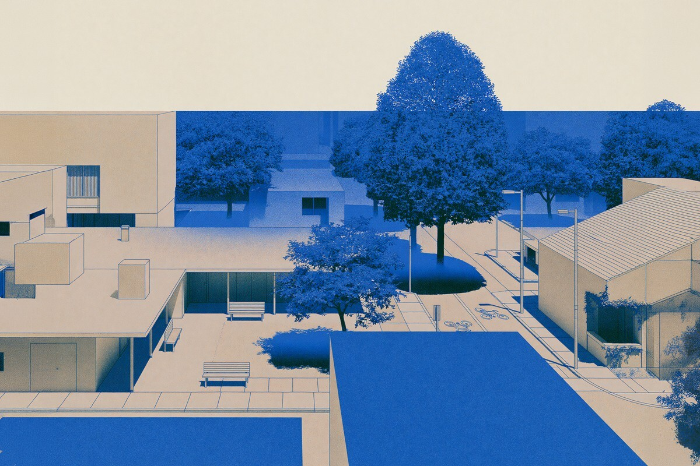
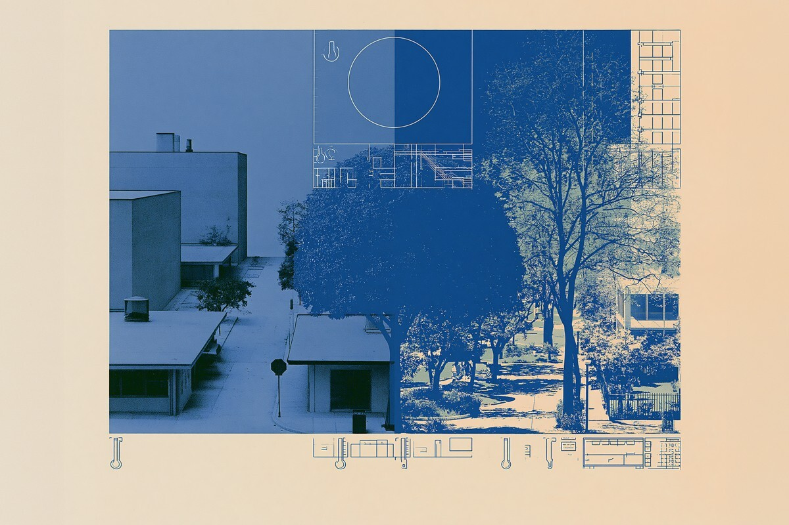
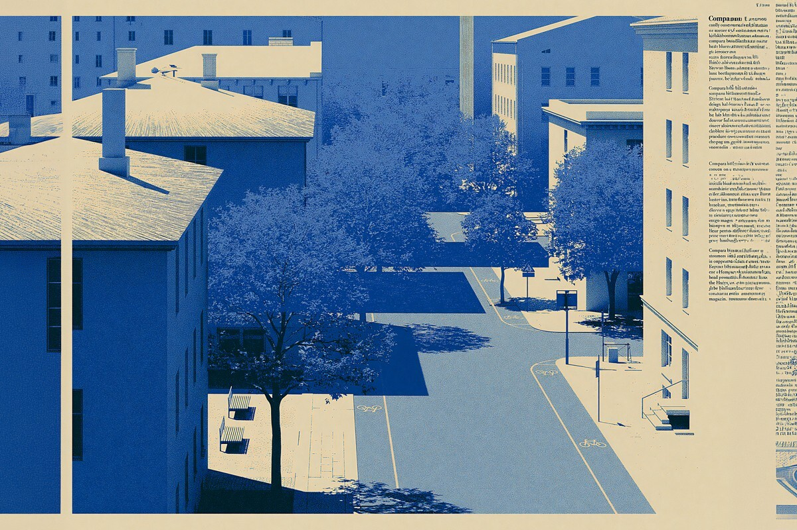
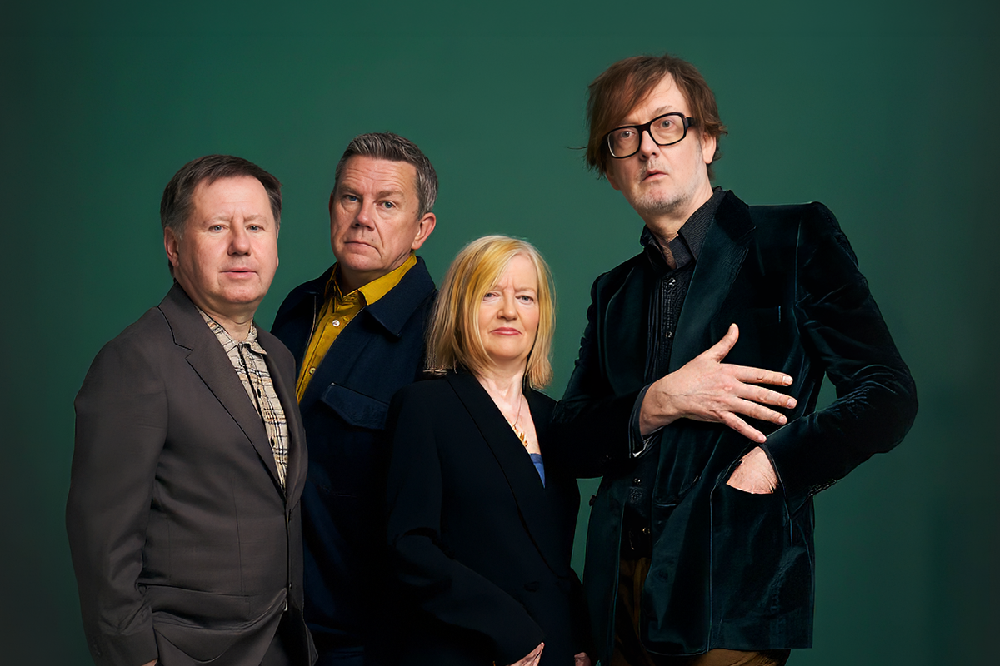

Es invierno, pero esto te importará en enero
El verano ya se está diseñando
El verano ya se está diseñando

Sé que suena raro hablar de calor extremo mientras en Chile todos están buscando la parka más gruesa del clóset. Pero hace unas semanas, caminando por una calle de Milán en pleno verano, sentí algo que no se me olvida: el cemento estaba blando, como si estuviera a punto de derretirse. Y no estoy exagerando.
Milán es una ciudad de puro cemento, con poquísimas áreas verdes y, cuando llegan las olas de calor extremo, la ciudad literalmente se ablanda. Justamente por eso vale la pena mirarlo ahora, con la cabeza fría: cuando no estás con el termómetro marcando 37 grados, es más fácil pensar en cómo prepararse para el próximo verano.

A diferencia de lo que uno podría esperarse, como repartir folletos sobre hidratación o regalar muestras de bloqueador, la municipalidad decidió rediseñar la ciudad completa.
El “Piano del Verde” es un plan con 22 objetivos y 49 acciones que busca sacarle cemento a la ciudad y poner árboles en tiempo récord. Uno de sus ejes, “Milano più fresca” (Milano más fresca), apunta a bajar hasta 2 grados la temperatura local para 2050. Aquí ya no se habla de una promesa ambientalista genérica: es una decisión de ingeniería urbana basada en que, si no se hace, ciertas zonas se van a volver invivibles en verano.

Esto ya dejó de ser un tema de sostenibilidad. El calor extremo está empezando a colarse en decisiones que antes parecían puramente personales, del tipo: a qué hora salir a caminar, si tu depto nuevo tiene sombra o le pega el sol todo el día, si conviene trabajar temprano en la mañana o tarde en la noche. Ciudades enteras están rediseñando horarios laborales y escolares por lo mismo.
El clima dejó de ser paisaje de fondo y pasó a ser una variable más que entra en el cálculo de cómo vivimos el día a día.

En Chile todavía pensamos en el calor como algo que se aguanta a punta de ventilador, no como algo que se planifica. Pero ciudades como Santiago, con su propia isla de calor urbano y sus barrios de puro cemento sin ningún árbol que dé sombra, no están lejos del escenario milanés.
Mientras muchos se preguntan si también llegarán a Chile los +40 grados, podríamos reflexionar sobre cuándo se comienza a diseñar para eso en lugar de reaccionar cuando ya sea tarde.
Lo que está pasando en Europa con el calor no es solo una noticia ambiental: es un ensayo general de decisiones que, tarde o temprano, todos vamos a tener que tomar. Y capaz que entender cómo se prepara otro lugar del mundo sea la forma más simple de anticipar lo que se viene en el propio, aunque hoy, mientras lees esto, estés con una zafrada y taza de té.
 Cultura
CulturaEl hecho de que estemos entrando al mes de julio no se puede creer. Pero lo que tampoco se puede creer es la cantidad de artistas que han…
 Cultura
CulturaCuando hablamos de trabajos clásicos de la música chilena, siempre se nombran los discos de Violeta Parra, Víctor Jara, Los Jaivas o…

CulturaSi de britpop se trata, la discusión siempre se resume a la existencia de dos grupos: Oasis y Blur. Ambas bandas, que siempre mostraron una…